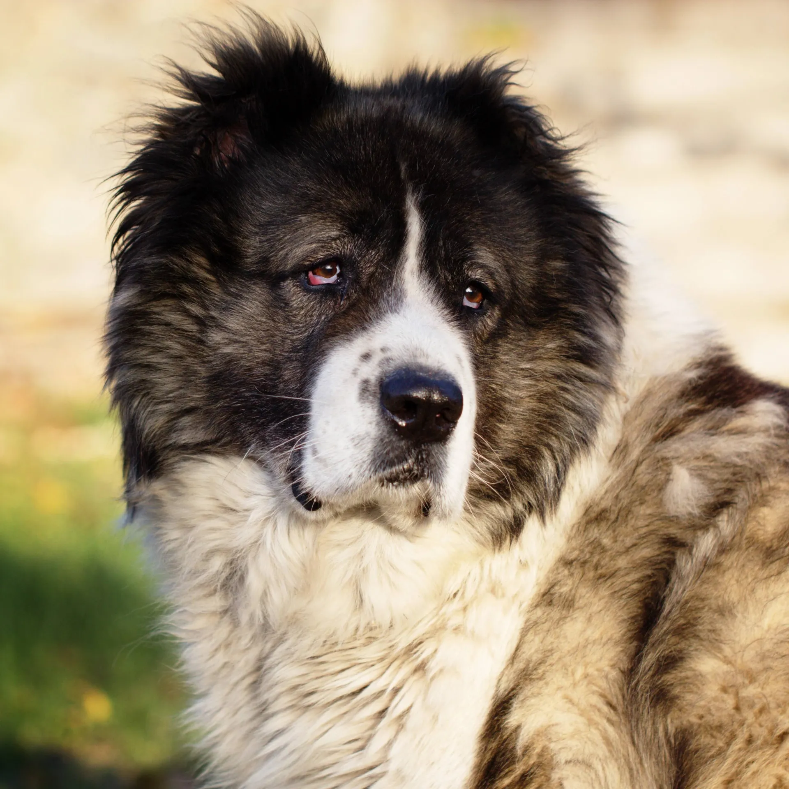
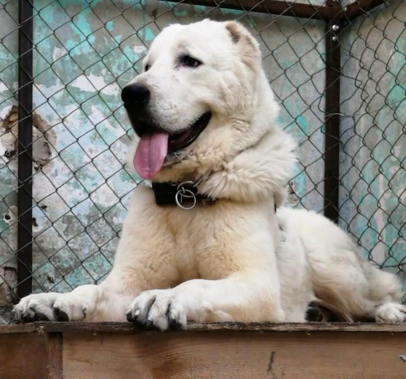
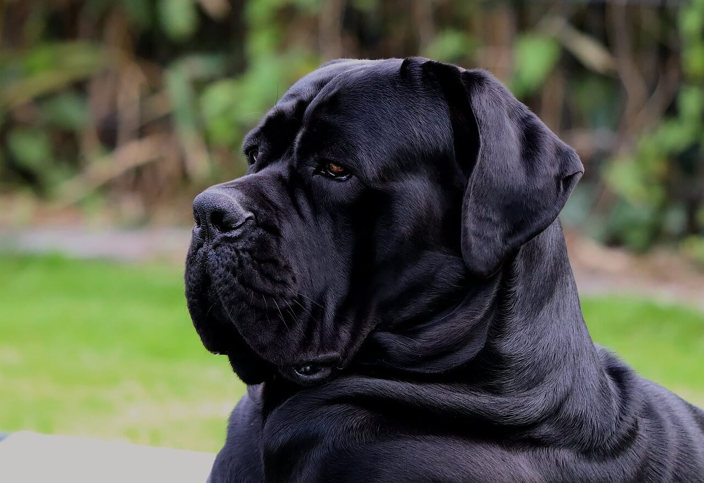

ELITE BLOODLINES
Mafia Dogs



GENERAL

🐕اشرس انواع الكلاب🐕
CAUCASIAN
🐕 كلاب كوكيجن 🐕
أهم النصائح حول تربيتها
أنواع الكلاب المنزلية
®المحتويات :-
كلاب الكوكيجن :-
تنتمي إلى فصيلة الكليبات، وتشبه الذئاب في شكلها وهي من الثدييات؛ تلقب كلاب الكوكيجن بكلاب
جبال القوقاز، وكلاب الدب الروسية، وباسخان باري، أو فقط الكلاب القوقازية، وتدل هذه الألقاب
على ضخامة وقوة هذه السلالة؛ ويعد كلب الكوكيجن من أفضل الكلاب التي تستخدم للحراسة، خاصةً
حراسة الأسرة المتواجد لديها، وكان يتم تربية هذه الكلاب لرعاية وحراسة القطعان والمنازل من
الحيوانات البرية المفترسة في جبل القوقاز .
●طول كلاب الكوكيجن :-
يتراوح طول ذكر الكوكيجن بين 68-77 سم تقريباً ؛
بينما يتراوح طول الأنثى بين 63-71 سم تقريباً .
●وزن كلاب الكوكيجن :-
يتراوح وزن الذكر منه بين 49-100 كغم؛ ويتراوح وزن أنثاه بين 45-82 كغم تقريباً.
●الصفات الشكلية لكلاب الكوكيجن :- تتصف بالضخامة، يمتلك طبقتين من الفرو؛ إحداهما ناعمة
والأخرى خشنة وطويلة ؛
يمكن أن يكون لونه رمادياً، أو أحمر، أو كريمياً، أو حتى أبيض، ولون الفرو رمادي مع وجود بقع
بلونين مختلفين .
●متوسط العمر لكلاب الكوكيجن :- يتراوح متوسط عمره بين 10-12 سنة.
®صفات وسلوك كلاب كوكيجن
صفات كلاب كوكيجن الشخصية
إليك عدد من صفات كلاب الكوكيجن:-
لا يصلح للأشخاص المبتدئين في تربية الكلاب.
يحبون أفراد العائلة المتواجدين فيها ويخلصون لها، إلا أنهم لا يتقبلون الغرباء بسرعة ولا
الكلاب والحيوانات الأخرى.
تتصف بالذكاء، ولكنها كلاب عنيدة أيضاً ومستقلة؛ لذا يصعب تدريبها بسرعة.
رياضي ولديه عضلات قوية وثقيلة.
يتسم بالقوة، الشجاعة، الثقة بالنفس، والشراسة.
الرفيق الصدوق الدائم لرعاة منطقة القوقاز لعدة عصور؛ حيث كانوا يقومون بحراسة قطعان الأغنام
والرعاة من الحيوانات المفترسة.
قادرون على تحمل درجات الحرارة شديدة البرودة.
يميل للشراسة إذا لم يكن مدرباً جيداً.
يتحمل المشي لمسافات طويلة.
®نصائح للتعامل مع كلاب كوكيجن
®وكيفية التعامل مع كلب الكوكيجن :-
●يجب أن يتم تدريبهم من قبل مدربين محترفين ومختصين على الحياة الاجتماعية وعلى رؤية الحيوانات
الأخرى في عمر مبكر؛
فهي لا تتقبل الأشخاص الدخلاء والغرباء.
●يجب على هذه الكلاب أن تعتاد على وجود الأطفال ولكن بشكل تدريجي؛
مع تنبيه الأطفال على اللعب معهم بشكل لطيف، لأنهم قد يرون اللعب العنيف بمثابة هجوم وأنه يتم
تهديدهم.
●يجب مراقبة كلاب الكوكيجن وتدريبهم على وجود الحيوانات الأخرى المختلفة، ومع ذلك، يفضل عدم
وجود حيوانات أخرى غيره في البيئة المنزلية.
●يجب الانتباه إلى أنه تم تدريبهم ليكونوا حراساً شرسين، لذا لن يتردد بالمدافعة عن البيت
والممتلكات إذا رأى أشخاصاً غرباء، وقد يواجه المدربون بعض الصعوبات في تدريبها، خاصةً إذا كانت
كبيرة.
●يحتاج كلب الكوكيجن إلى العديد من التمارين الرياضية ومراقبة وزنهم.
®تغذية كلاب كوكيجن :-
أطعمة ضرورية لكلاب كوكيجن
إليك قائمة بالأطعمة التي يجب أن يتناولها :
الأطعمة التجارية الجاهزة، التي يمكن خلطها مع الطعام المعلب، مرقة الدجاج أو اللحم، وممكن مع
الماء.
البيض المطبوخ.
●الفواكه والخضروات :-
كالبطيخ، الخيار، التوت البري الأزرق، الموز، الفاصولياء الخضراء.
الجبن الأبيض.
زبدة الفول السوداني.
الدجاج المسلوق غير المتبل.
الأسماك؛ كسمك السلمون، والتونة.
الديك الرومي المطبوخ.
®الأطعمة غير المناسبة لكلاب كوكيجن
فيما يلي ،
®الأطعمة التي يجب الابتعاد عنها :-
●الأفوكادو :-
لاحتوائه على مواد سامة تسبب الإسهال والتقيؤ.
●الكرز :-
يحتوي على مواد سامة تسبب الاختناق أو انسداد في الأمعاء.
●الشوكولاتة، القهوة، الكافيين :-
تسبب هذه المواد التقيؤ،
واختلالاً في ضربات القلب،
وتشنجات، وأحياناً الموت.
●الزبيب والعنب :-
سامة للكلاب وتسبب فشلاً كلوياً وأحياناً تؤدي إلى الموت.
●اللحم النيء، والبيض النيء :-
تحتوي على البكتيريا المسببة للسالمونيلا، وأيضاً يؤثر البيض غير المطبوخ على الجلد والفراء.
●البصل والثوم :-
لاحتوائهما على أكسيد الكبريت العضوي الذي يسبب الإسهال، والتقيؤ، وألماً في المعدة.
®عدد الوجبات المناسبة لكلاب كوكيجن
عدد مرات إطعام كلب الكوكيجن تختلف بناءً على العمر، كالتالي :-
●عند عمر 8-12 أسبوعاً :-
تحتاج 4 وجبات في اليوم الواحد.
●عند عمر 3-6 شهور :-
تحتاج 3 وجبات في اليوم الواحد.
●عند عمر 6 أشهر :-
تحتاج إلى وجبتين في اليوم الواحد.
●عند عمر السنة :-
إطعامه مرة واحدة خلال اليوم يكون كافياً.
®صحة كلاب الكوكيجن :-
●الأمراض الأكثر شيوعاً عند كلاب الكوكيجن
بعض الأمراض والمشاكل الصحية التي يمكن أن تصيبه :-
●السمنة المفرطة :-
قد تؤدي السمنة المفرطة إلى حدوث مشاكل في المفاصل، وأيضاً اضطرابات في عمليات الأيض والهضم،
ومشاكل في القلب، وألم في أسفل الظهر.
●اضطرابات الأسنان :-
تبدأ بنمو الجير على الأسنان وتستمر إلى اللثة وجذور الأسنان؛ وقد يؤدي تراكمها إلى حدوث مشاكل
في القلب، والكبد، والكلى، والمفاصل.
●العدوى :-
التهابات فيروسية أو بكتيرية كداء الكلب، وحمى الكلاب،
أو مشاكل في الأمعاء (مرض بارفو)،
يمكن الحد من هذه الأمراض باستخدام المطاعيم الخاصة اعتماداً على العمر، والظروف الخاصة بالكلب.
●الطفيليات :-
شرب المياه غير النظيفة، والمشي على التربة الملوثة، أو العض من قبل بعوضة قد تسبب دخول بعض
أنواع الديدان إلى الجسم، والجلد، والأذنين.
●الانتفاخ :-
حدوث التواء في المعدة يؤدي إلى انسدادها وتكون الغازات في بطن الكلب، وأيضاً يؤدي إلى انقطاع
الدم عن المعدة أو الطحال،
وفي حالة تركه دون علاج قد يكون مميتاً في أقل من 30 دقيقة،
وقد يتقيأ الكلب، وقد يستلقي في وضعية الأرجل الأمامية للأسفل والخلفية إلى الأعلى.
●إعتام عدسة العين :-
تصبح عدسات العيون قريبة إلى اللون الرمادي وقد يسبب العمى للكلاب، ويمكن إزالته بإجراء عملية
جراحية.
●تشوهات في مفصل الفخذ ومشاكل في الركب :-
حيث أن هذا المرض وراثي ويسبب نمواً غير مناسب للمفاصل مما ينتج عنه التهاب في المفاصل وعرج
للكلب.
●مشاكل القلب :-
إن حدوث تضيق في الشريان الرئوي، قد ينتج عنه إغماء للكلب أو التعب عند ممارسة التمارين
الرياضية، أو السعال، وصعوبة في التنفس.
®المحافظة على صحة كلاب كوكيجن
بعض النصائح يمكن اتباعها للحفاظ على صحة كلاب الكوكيجن :-
◆الانتباه إلى النظام الغذائي.
◆الحرص على ممارسة التمارين الرياضية.
◆تنظيف الأسنان والفرو بانتظام.
◆المتابعة مع الطبيب البيطري في حالة ظهور أي أعراض خطيرة.
®نصائح أخرى في تربية كلاب الكوكيجن
تكاثر كلاب الكوكيجن
من أهم المعلومات :-
●تتراوح فترة الحمل بين 60-64 يوماً.
يكون الحمل مرة واحدة خلال السنة ●ويكون عدد الجراء 5-10 جراء.
●تمر الإناث في البداية بمرحلة المقدمة التي تستمر لمدة 9 أيام، وخلالها تجذب الإناث الذكور
للتزاوج.
●الفترة الزمنية بين الدورات
(فترات الحرارة) تصل إلى 6 أشهر.
®كم يحتاج كلاب كوكيجن من النوم؟
فيما يتعلق بعدد ساعات النوم لكلاب الكوكيجن، إليك التالي :-
●إن مقدار ما يحتاجه كلب كوكيجن من النوم يتراوح ما بين 12-14 ساعة.
●أما بالنسبة للجراء :-
فتحتاج ما يتراوح بين 18-20 ساعة،
حيث أن هذا المقدار مهم جداً في عملية اكتمال الجهاز العصبي المركزي، والمناعة، والعضلات.
ALABAI
🐕 الكلب الألاباي 🐕
(راعي آسيا الوسطى) هو سلالة قديمة وعملاقة تشتهر بقوتها الهائلة، شجاعتها، وولائها الشديد، وتستخدم تاريخياً في حراسة الماشية ومواجهة المفترسات. يتميز ببنية عضلية قوية ووزن يتجاوز (50) كجم، وهو كلب مستقل وذكي، يحتاج لتدريب خاص، وتعتبره تركمانستان رمزاً وطنياً وكنزاً وراثياً نقيًا، مع شخصية لطيفة مع عائلته وحذرة مع الغرباء.
نشأته وتاريخه الموطن الأصلي: آسيا الوسطى (تركمانستان، كازاخستان، أوزبكستان).
الوظيفة القديمة: حراسة قطعان الأغنام والماعز من الذئاب والحيوانات المفترسة.التاريخ: سلالة قديمة جداً تعود إلى آلاف السنين، وحافظت على نقائها الوراثي دون تأثير كبير من سلالات أخرى.
المواصفات الجسدية الحجم والوزن: يعد من أضخم الكلاب، حيث يزن الذكور غالباً من (50) إلى أكثر من (73) كيلوغراماً، ويتجاوز طولهم (70) سم.
البنية: يتمتع بعضلات قوية وجلد سميك يحميه أثناء المعارك.
المظهر: ذيل طويل يشبه المنجل (يتم بتره غالباً في صغره)، أذنان قصيرتان، ورأس ضخم.
الألوان: تأتي بألوان مختلفة، وغالباً ما تكون داكنة مع بقع بيضاء، مع أهمية وجود علامات بيضاء محددة.
الشخصية والسلوك حارس محترف: يتميز بشجاعة لا توصف، ولا يهاب الدببة أو الذئاب، مما يجعله من أفضل كلاب الحراسة.
الولاء: كلاب وفية جداً لأصحابها ولطيفة مع عائلتها.
الاستقلالية: يتمتع بشخصية مستقلة وفخورة، مما يتطلب صاحب كلب متمرس وقوي الشخصية للسيطرة عليه وتدريبه.
التصرف مع الغرباء: حذر ومريب تجاه الغرباء، مما يجعله كلب حراسة ممتاز للمنازل والمزارع.
الرعاية والتدريب الاحتياجات: يحتاج إلى مساحات واسعة للحركة ولا يناسب الشقق الصغيرة.التدريب: يحتاج إلى تدريب مبكر على الطاعة والاجتماعية لتقليل حدة حذره تجاه الغرباء.
يعد الألاباي وحشاً طيباً مع أهله وشرساً في حماية أراضيه، وهو مثال للكلب العامل الذي يجمع بين القوة البدنية والذكاء الفطري.
CANE CORSO
🐕كلب الكاني كورسو🐕
هو سلالة إيطالية عريقة وقوية من كلاب الدرواس (الماستيف)،
تمتاز بذكاء حاد، ولاء مطلق، وغريزة حماية عالية، مما يجعلها كلاب حراسة ممتازة. يزن الكلب أكثر من 45 كجم بارتفاع يصل لـ 71 سم، ويحتاج لتدريب وتنشئة اجتماعية مبكرة من قبل مالكين ذوي خبرة.
إليكم أبرز المعلومات عن هذا الكلب المهيب :-
أصل الكاني كورسو وتاريخه
يعود نسب السلالة إلى العصر الروماني القديم،
حيث كانت تُستخدم كلاباً للحراسة والصيد وحروب الجيوش.
اسم "كاني كورسو" مشتق من اللاتينية، ويُترجم تقريباً إلى "كلب الحراسة" أو "كلب المزرعة".
تُعرف بلقب "كلاب الإعدام" لقوتها العضلية المذهلة وقدرتها على القتال وعدم الخوف.
●الصفات الجسدية :-
*المظهر :-
جسم عضلي قوي، رأس كبير، وذيل سميك.
*الفراء :-
قصير وخشن،
يأتي بألوان » الأسود، الرمادي، البني الفاتح (Fawn)، أو المرقّط.
*قوة العض :-
يتمتع الكاني كورسو بقوة عض هائلة تصل إلى 650 رطل لكل بوصة مربعة، وهي من بين الأقوى عالمياً.
*الوزن والطول :-
يتراوح وزن الذكور غالباً بين 36 - 54 كجم، ويبلغ ارتفاعها عند الكتف حوالي 59-70 سم.
*الشخصية والسلوك :-
الحماية والولاء، مخلص جداً لعائلته وحارس لا ينام، ويميز بدقة بين الأصدقاء والأعداء.
*الذكاء والتدريب :-
ذكي وسهل التدريب، لكنه يحتاج إلى مالك حازم وواثق بسبب عناده.
*النشاط :-
كلب عامل بامتياز يحتاج إلى تمارين رياضية يومية
(حوالي 30 دقيقة من المشي السريع أو الركض) لتفريغ طاقته وتجنب سلوكه التدميري.
*التعامل مع الغرباء :-
غالباً غير مبالٍ بالغرباء، ومستقل، لكنه حنون مع عائلته.
*العناية والصحة :-
متوسط العمر:-
يعيش الكاني كورسو ما بين 9 إلى 12 عاماً.
*المشاكل الصحية :-
قد يكون عرضة لخلل تنسج الورك والكوع، التواء المعدة (الانتفاخ)، وبعض مشاكل العين.
*التغذية :-
يحتاج إلى طعام عالي الجودة يناسب السلالات الكبيرة لدعم نمو عظامه.
هل الكاني كورسو مناسب لك؟
يُعد الكاني كورسو خياراً ممتازاً ككلب حراسة عائلي، لكنه ليس مناسباً للمربين المبتدئين، حيث يتطلب التدريب الاجتماعي منذ الصغر لضمان عدم شراسته المفرطة، فضلاً عن حاجته للمساحة والنشاط البدني.
×